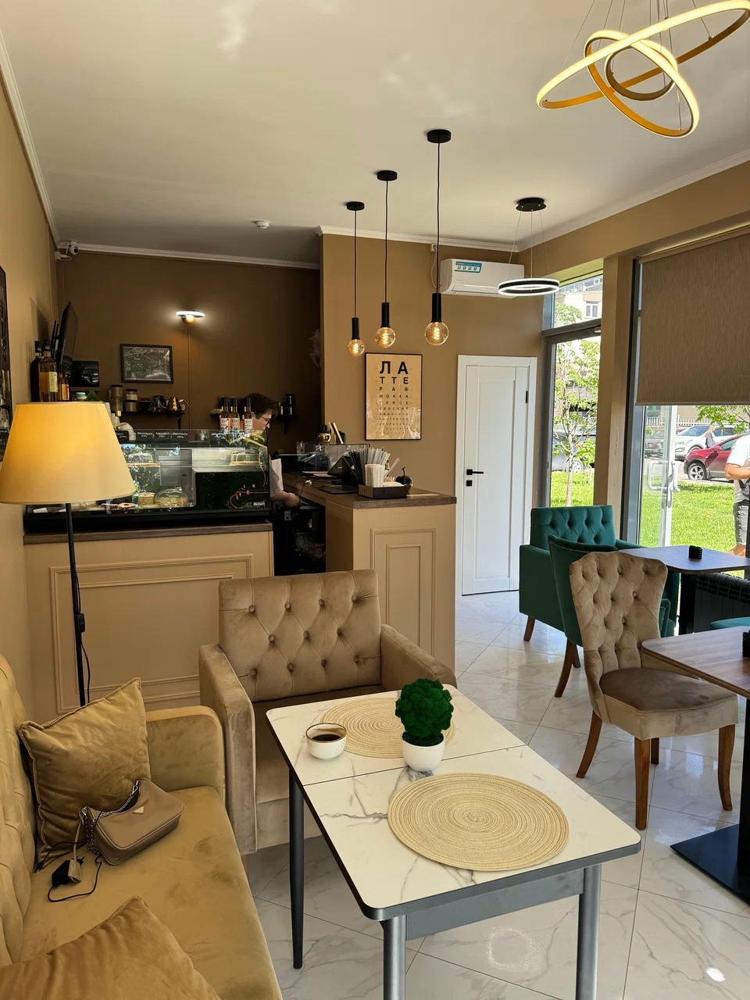

Полное меню кофейни

«Кофе, ради которого хочется просыпаться»

Правильный кофе — это не случайность, а результат строгого придерживания всех стандартов заваривания на всех этапах, чтобы вы каждый раз получали стабильно идеальный вкус.
Сбалансированная плотная Бразилия или утонченная ароматная Эфиопия на ваш вкус. Есть Декаф.
Широкий выбор растительного молока для ваших идеальных и полезных кулинарных экспериментов.
Мы с радостью подстроим плотность, температуру и сладость напитка под ваше настроение.
Адрес: г. Реутов, улица Ленина, дом 3 (1 этаж)
Телефон: +7 (909) 165-32-42
График работы:
• В будние дни (Пн-Пт): с 7:00 до 21:00
• В выходные дни (Сб-Вс): с 8:00 до 21:00
Открыть в Яндекс.Картах